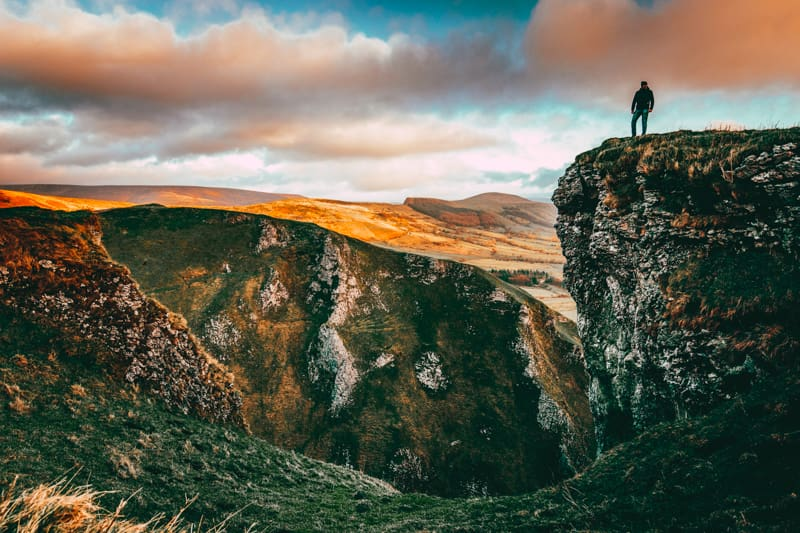
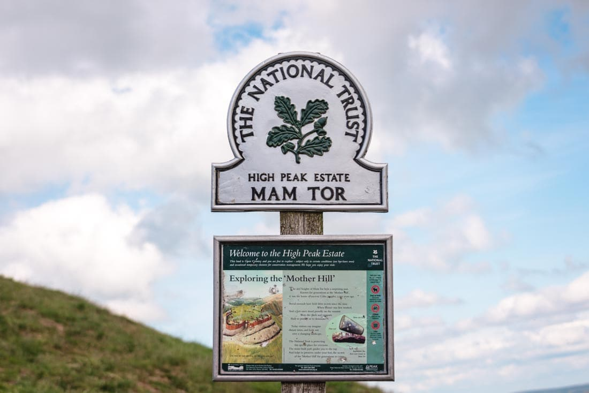
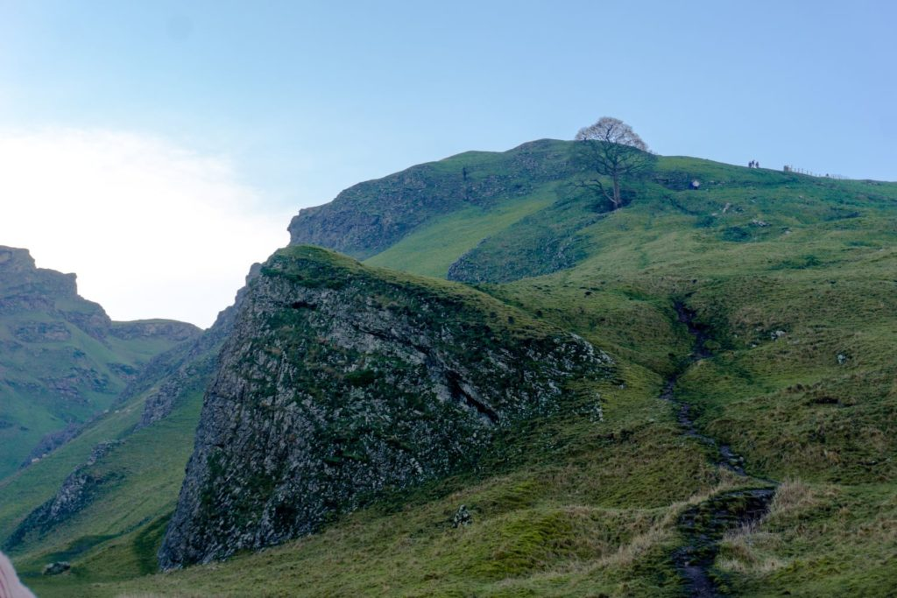
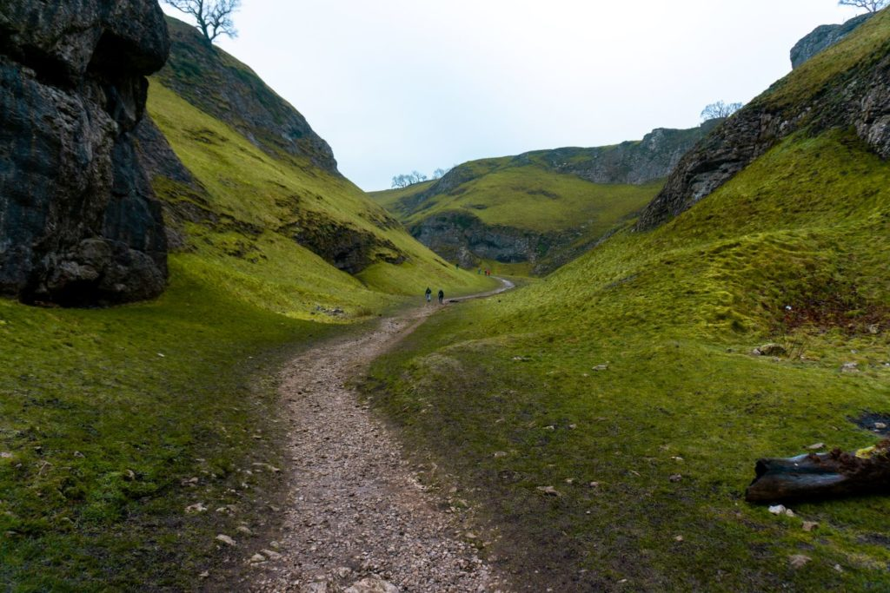
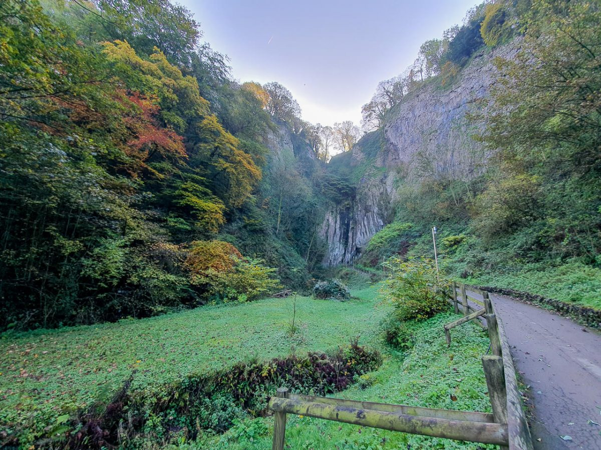
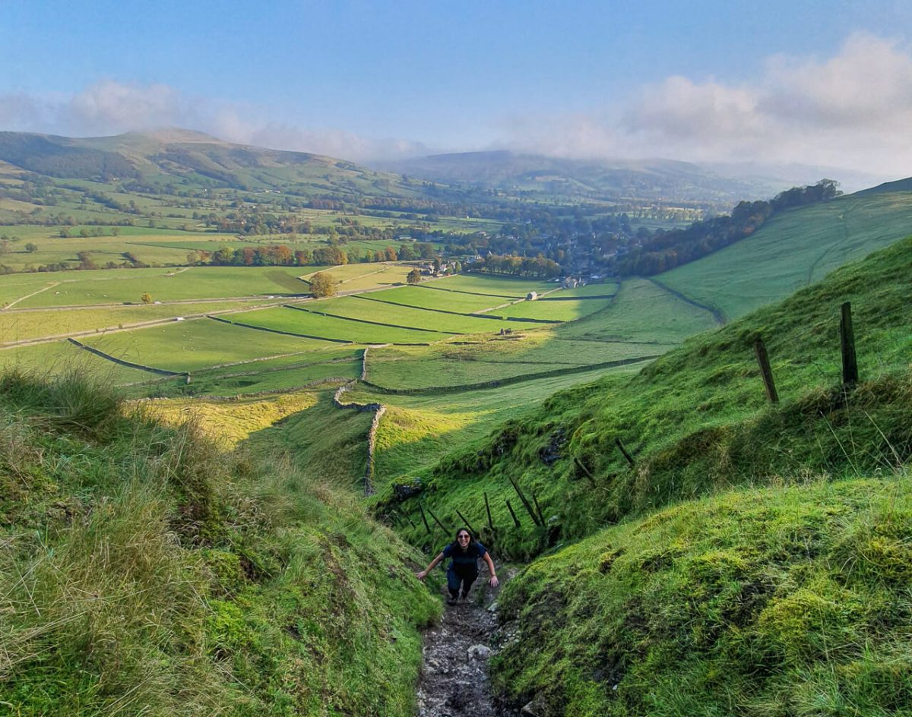

Mam Tor


The Peak District
The Peak District is Britain’s first National Park, created in 1951 to help preserve its natural beauty, and the fifth largest in England and Wales. The area, which covers 555 square miles is a mixture of dark gritstone crags and expanses of moorland in the Dark Peak turning into the rural, rolling limestone hills and steep sided dales of the White Peak.
It’s not all about the natural beauty though, in addition to photography the Peak District offers a diverse range of activities for any visitor. With highlights such as Chatsworth House, quaint villages, sightseeing of medieval castles, the largest underground cave in Britain and plenty of high adrenaline sports. There really is something for everyone.
The Peak District attracts over 10 million visitors per year. One of the main reasons for this fact is the ease of access, being in central England with large cities surrounding the Peak District.
The Peak District and Derbyshire is steeped in history. From castles and Iron Age hill forts, to stately homes, to the home of the industrial revolution, to the dam busters testing grounds over at Ladybower.
There is also the importance of the Kinder Trespass; the main reason we have access to the hills and mountains today. In 1932 over 400 people fought for the right to roam, it took until the year 2000 for a bill to be passed which stated that the public were allowed open access to our lands. Without their bravery to fight for what they believed in, half of the locations featured in this guide would not be accessible.
It’s not entirely clear why the Peak District is called so, because there are very few true peaks. It is believed to however be either from the old word “peac” which means hill or because the ‘Picts’ people once lived here.
Whatever the reason for your visit, you’re sure to have a camera of some kind with you and this guide aims to provide you with the skills and knowledge to harness the photographic potential of the Peak District. It will help you discover the best locations and help you plan when to visit, how to get the most out of the location creatively. Happy shooting and enjoy your visit here!
Top Picks
Mam Tor
Mam Tor is known as the ‘Shivering Mountain’, and it dominates the landscape around Castleton.
Standing at 517 metres, it is one of the highest mountains in the Peak District. Once you make it to the top, you have these stunning views of the White Peaks and the gorge at Winnats Pass.
Mam Tor gets its name from “mother hill”. This is from the fact it is prone to landslides, meaning it has inadvertently given birth to several smaller hills in the area. Don’t worry though, it has since been stabilised to prevent from any further landslides from happening.
How Long
In total, the circular walk around Mam Tor is 6½ miles long. Usually, this will take anywhere between 3 and 5 hours. Both times I’ve walked it, it took me just over 4 hours, so that’s a rough guide to go with. By the way, this is for the circular walk starting in Castleton. There is a more direct route where you can park at the bottom of Mam Tor. From here, it only takes 20/30 minutes to walk to the trig point. This is best if you’re short of time and you just wanted to take in the views from the top. Once you’re at the top, the Great Ridge of Mam Tor runs for approximately 2 miles from Mam Tor to Lose Hill. This overlooks the villages of Castleton and Hope. To be honest with you, this is probably my favourite section of the walk, but more on that later. I would suggest parking in Castleton. There are two car parks here. The main one is just off Buxton Road as you’re coming into Castleton. This has the most number of spaces. The other car park is opposite the Peak Hotel. If you park here, you can get your parking validated for free is you spend over £15 in the hotel. It’s quite handy if you think you’re going to be parking all day. The Mam Tor car park prices are £2.50 for 1-2 hours, £4 for 2-4 hours, and £6 for up to 10 hours. Another thing – you cannot pay contactless for either car park in Castleton, so make sure you’ve got some change with you. If you are just looking to do the short walk up Mam Tor, then you’ll want to head towards the Mam Tor car park. This is at the base of the mountain. You can find the car park here on Google Maps.
Winnats Pass
A road winding through tall, grassy peaks with clean pass lines and layers of rock - it’s no wonder Winnats Pass was one of my most saved from Instagram. I hadn’t planned to take pictures here - so many others have done it so much better with dedication to the right light and the climb to the top - but in the end I couldn’t help myself.
Standing at 517 metres, it is one of the highest mountains in the Peak District. Once you make it to the top, you have these stunning views of the White Peaks and the gorge at Winnats Pass.
Mam Tor gets its name from “mother hill”. This is from the fact it is prone to landslides, meaning it has inadvertently given birth to several smaller hills in the area. Don’t worry though, it has since been stabilised to prevent from any further landslides from happening.
Directions
From Castleton Visitor Centre, turn right onto the road (A6187) and walk down the pavement for about 200 metres. You’ll go past an old garage, then on the left-hand side of the road there’s a car park with a fingerpost sign. Turn left here, walk through the car park and on the other side you’ll reach a cute bridge and a few houses. Walk alongside the stream, following the sign for the Peak Cavern, you can pop down the path here to see the entrance to the cave, it only adds a few minutes to the walk and it’s pretty cool to see! To visit the cave it is a paid attraction in the Peak District, so be sure to plan enough time if you want to visit. If you opted to do the detour to the cave, you’ll now turn left and if you didn’t then turn right up past a narrow street of houses. Turn left and up the road until you reach a gate that takes you to a single track path alongside a wall. At this point, you’ll be able to see the Great Ridge and Mam Tor on your right and the top of Winnats Pass in front of you.
Car Park Prices
- £1.20 up to 1 hour
- £2.00 1-2 hours
- £3.40 2-4 hours
- £5.20 4-10 hours
Follow the path around until you reach a second gate. At this point, you can see a rough trail heading steeply upwards via the gully. On the day I hiked the route, it was a dry day, yet some of the rocks were still slippy so take it slow. There’s also a really steep section where a rope has been tied to a gate post. After testing the rope it felt secure so we used as an aid to hike up this section. Please double-check before you use it, in case it has moved! Continue following the gully all the way to the top, until you reach the grassy top of Long Cliff. From here follow the boundary wall all the way around until you reach the top of Winnats Pass.    